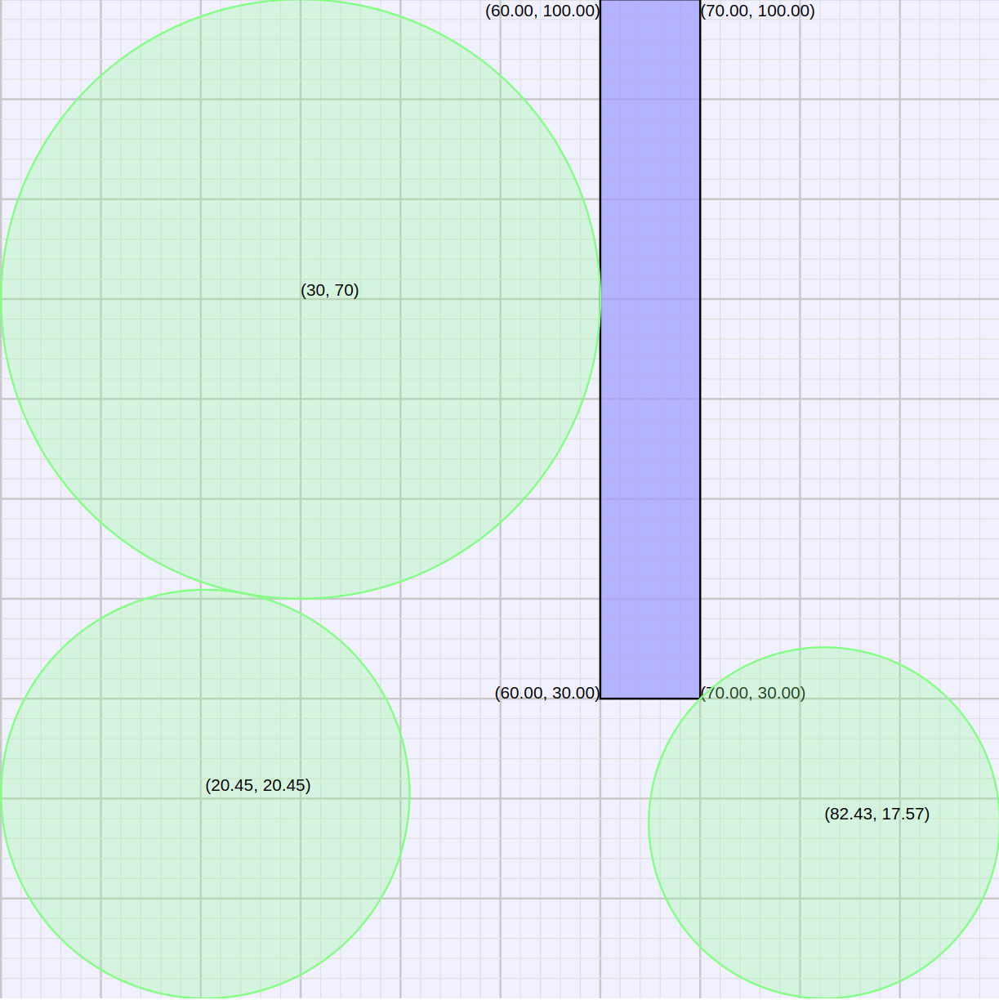

This hint sheet covers a few basics for playing Land Grab, in particular ways of finding the center and radius of circles that fit into a particular area.
We'll use this example layout for Land Grab, with a single obstacle of width 10 and height 70, and we'll place three circles in it.
The simplest math is placing a circle of maximum radius in a rectangular area like the upper left corner of the diagram.
What is the maximum radius circle that can fit into the upper left corner?
You should be able to answer this with a bit of thought. Note that the area's width is less than its height so width is the constraining limit. A radius of 30, half the width, is the highest feasible circle.
What center coordinated will put the circle as high as possible?
This is left as an exercise, with an answer shown below
The area to the lower right of

The final answer with all three circles:
